Foto: Olaf Larsen (2004)
Tekster: Olaf Larsen og Torvald Slettebø (2004)
Redaksjonskomiteen for jubileumsboka "Oddernes kirke - 950 år" ga i 1990 lektor Olaf Larsen i oppdrag å lage fotografier fra kirken. Fargefotografering var nytt i forhold til jubileumsboka fra 1940, og kunne gi inngang til en opplevelse av kirkens enestående og fargerike interiør. Det er en videreføring av dette arbeidet som her presenteres i nett-utgave.
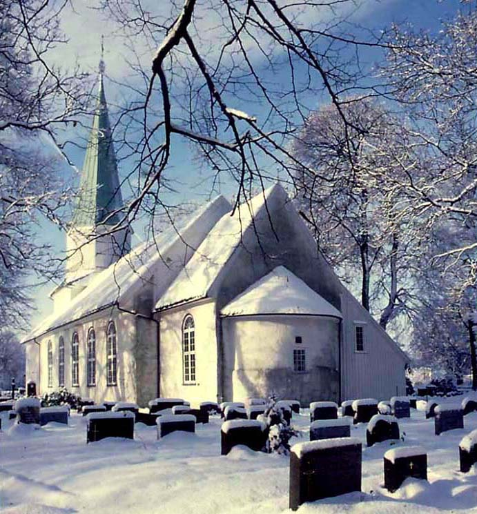Når vi nærmer oss Oddernes kirke fra øst, møter det oss en kirke som med sine bruddsteinsmurer og sitt kor med en halvrund apsidal avslutning, klart vitner om sin middelsalderfortid. Denne østlige delen av kirkebygget ble trolig satt opp på 1100 tallet.
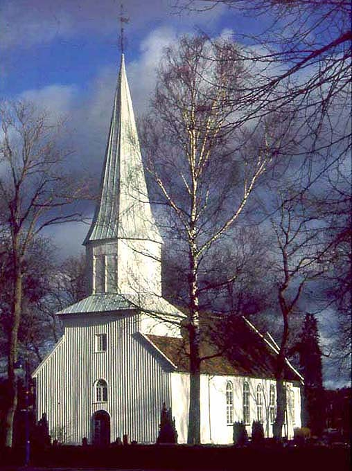På grunn av sterk befolkningstilvekst i Oddernes ved begynnelsen av 1600 tallet ble Oddernes kirkes skip forlenget med 8 meter. 7. juni 1635 skrev Christian Quart i sin dagbok under et opphold i Flekkerøy havn at han ga 100 riksdaler til "Oddernæs Kirkes Reparation og Forlængning". I 1699 kom så vedtaket om å bygge et kirketårn. Tårnbygget ble like bredt som kirkeskipet og fikk et høyt spisst tårn.
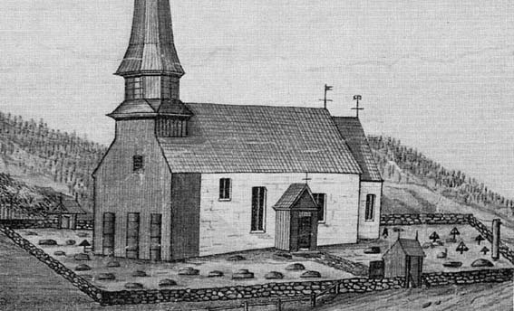Fra 1700 tallet var kirkens hovedinngangsdør midt på langveggen mot sør. I 1845 ble denne døråpningen murt igjen. - Nederst på kartet fra 1748 ser vi kjempegravene på Oddemarka, minner etter en eldgammel bosetting på Odder Næs.
p> 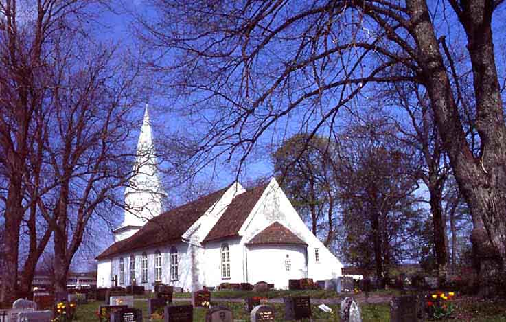Forut for denne ombyggingen hadde tårnbygget fått ny stående kledning, som ble malt kvit. Med en ensartet kvitfarge hadde nå Oddernes kirke fått det utseende som den har hatt siden.
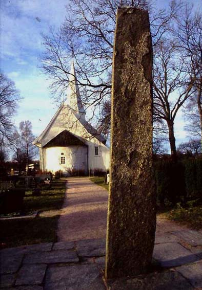 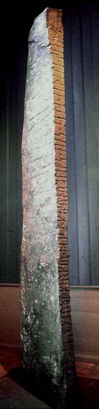I 1978 vurderte Universitetets Oldsakssamling bevaringsforholdene for innskriften på runesteinen ved Oddernes kirke og konkluderte med: "Steinen bør flyttes i hus". Den over 4 meter høye steinen ble flyttet og satt i kirkens våpenhus i 1990. Runene på smalsiden av steinen er i faglitteraturen datert til tiden "fra 1035 og litt fremover".
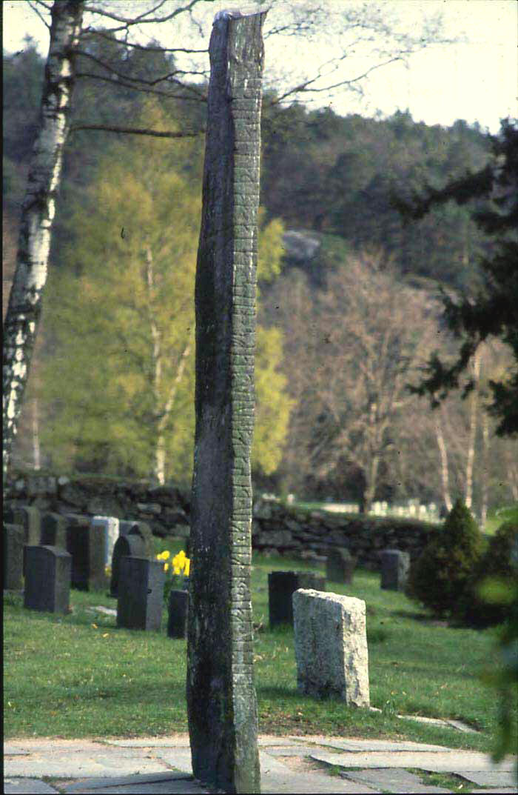Skrevet med de latinske bokstavene som svarer til de norrøne runene i vikingtiden, er innskriften på runesteinen som gjelder Oddernes kirke, denne:
AYINTR -- KARÞI -- KIRKIU -- ÞESA
Eyvind -- gjorde -- kirken -- denne
KOSUNR -- OLAVS -- HINS -- HALA -- A OÞALI -- SINU
gudsønn -- Olavs -- den -- hellige -- på odelen -- sin
Kirkebyggeren Eyvind Urarhorn som etter Snorre var en nær venn av Olav den hellige, ble drept av Einar Jarl på Orknøyene i 1019. Kirken som omtales på runesteinen må derfor være bygd før 1019. Det har nok vært minst en trekirke her før den eldste delen av den nåværende steinkirken, som ble reist på 1100 tallet.
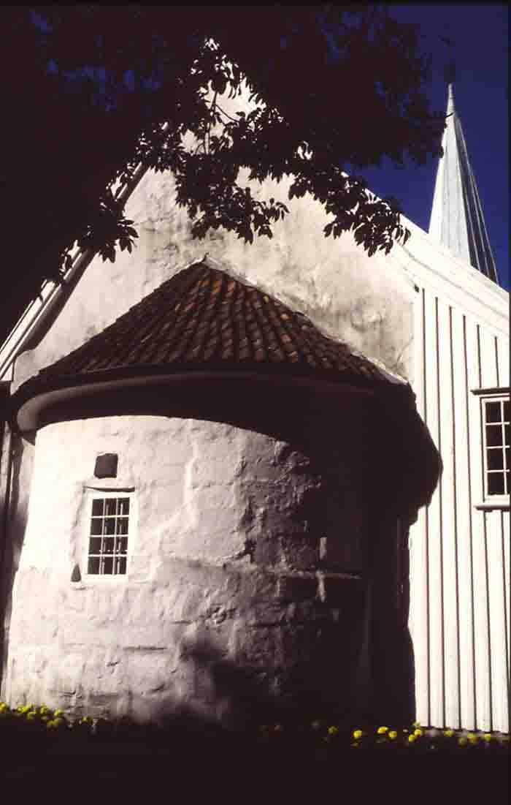De fleste av de norske steinkirkene fra middelalderen har rett avsluttet kor. Som en del andre kirker, særlig på Sørlandet og Østlandet, har Oddernes kirke en halvrund avslutning, en apsis eller apside.
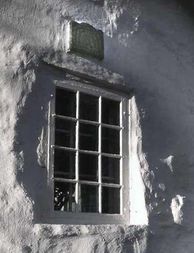Over vinduet i apsiden er det satt inn en stein som kan være en søylebærer fra det opprinnelige inngangsmotiv i vest, før kirken ble forlenget på 1600 tallet.
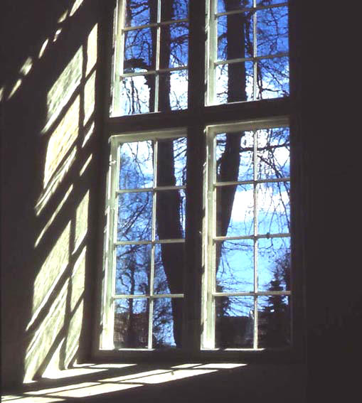I begynnelsen av 1800 tallet hadde Oddernes kirke få og delvis små vinduer. Men både skip og kor fikk store og ensartede vinduer langs hele kirkens sidevegg i løpet av 1800 tallet.
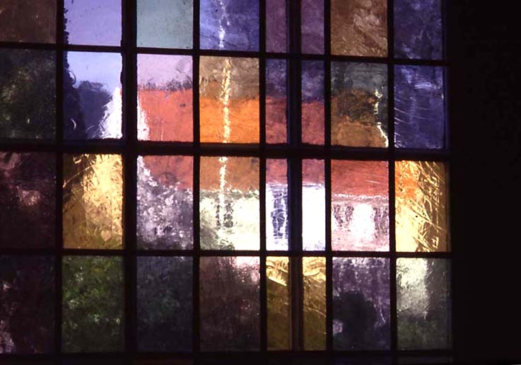Selv nordveggen har fått sine vinduer i forlengelse av kirkeskipet. Siden de er vendt mot nord, kan bildet av solbelyst prestegård både ses gjennom rutene i disse vinduene og speiles av i dem.
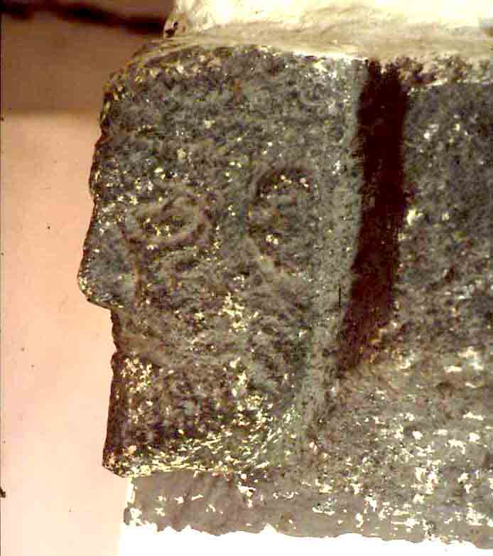Inne i kirken, på vederlagssteinen på nordre side av korbuen, er det hogd ut et mannshode som det kan være rimelig å tenke seg skulle representere den helgenkongen som hadde stått fadder til den Eyvind som i sin tid bygde en kirke her på sin odel mellom Topdalsfjorden og Otra.
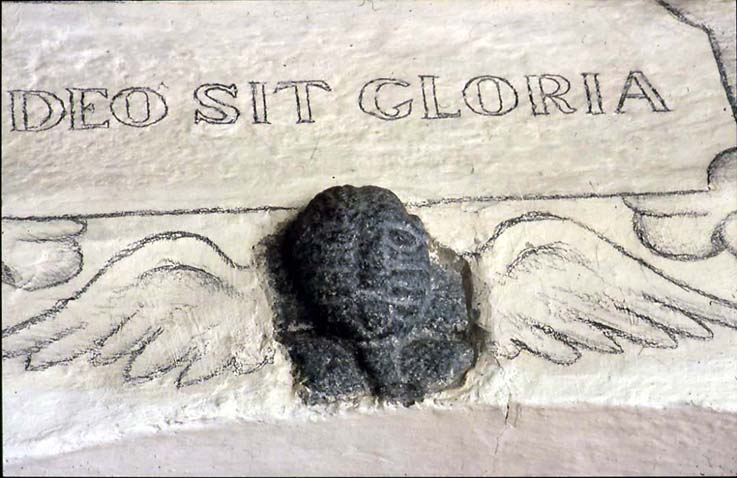Over korbuen er det, trolig i forbindelse korutvidelsen på 1600 talet, plassert en sluttstein med et uthogd ansikt eller en ansiktsmaske. Den har populært gått under navnet "djevlehodet". Det er ikke uvanlig med slike groteske ansiktsmasker i middelalderen.
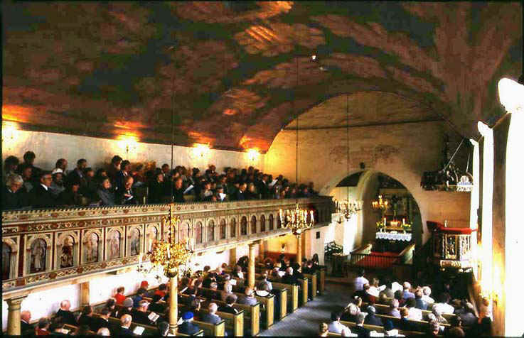Julen 1927 ble Oddernes kirke igjen tatt i bruk etter et svært omfattende restaureringsarbeid som stort sett ga kirken det interiør den har i dag. Maleren Ulrik Hendriksen er hovedansvarlig for dette arbeidet, som kom til å omfatte vekkskrelling av lag på lag av maling og kalk, og arkitektoniske forandringer som hadde til hensikt at kirkens interiør skulle "gjenoppstå i 1770-prakt".
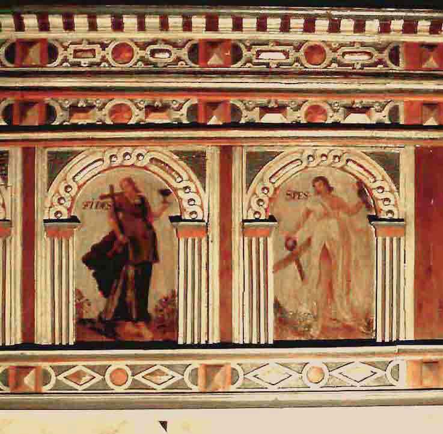Galleriene har rikt utskåret renessanse ornamentikk, og malte bilder som illustrerer eller tolker bibelske beretninger eller leveregler for kristen livsførsel. Her ser vi FIDES og SPES, tro og håp, plassert i sine praktfulle innramminger.
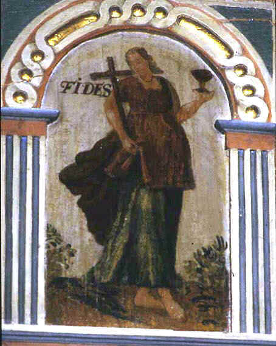"FIDES", tro, er den første av de tre teologiske dyder. Selv ikke lesekyndige og ikke latinkyndige kunne identifisere troen ved hjelp av faste symboler som korset og nattverdkalken.
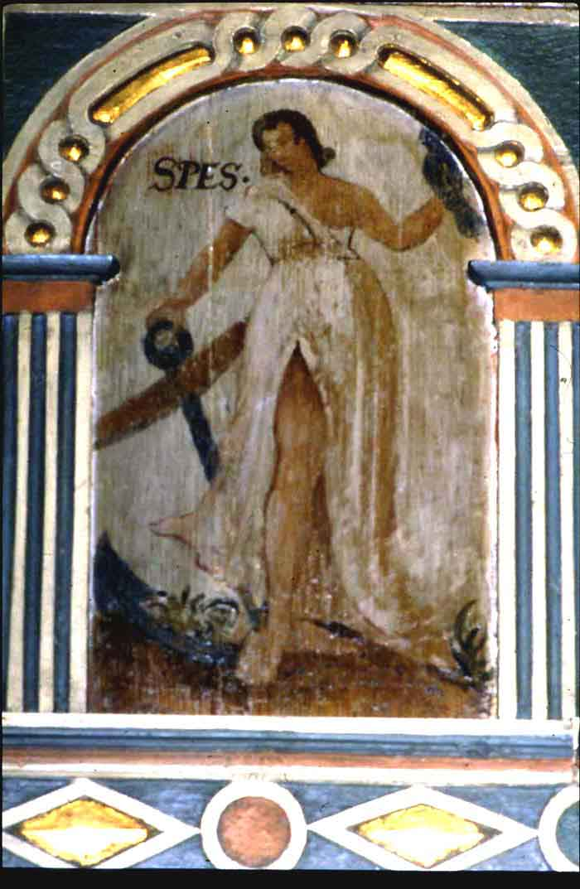"SPES", håp. Like vanskelig som det er å male troen, er det å gi en bildeframstilling av håpet. Men også her foreligger allment kjente symboler for håp, som anker og due, som kunstneren kunne benytte seg av.
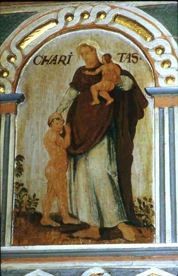"Charitas", kjærlighet, er tredje og siste av de teologiske dydene, " - men størst er kjærligheten". Her gir kunstneren meningen av det ordet ved å male et typisk eksempel på CHARITAS, nemlig ei kvinne som viser kjærlighet og omsorg for barn. En trenger ikke kjenne til den språklige sammenhengen mellom CHARITAS og KJÆRLIGHET for å få tak i den reelle sammenhengen.
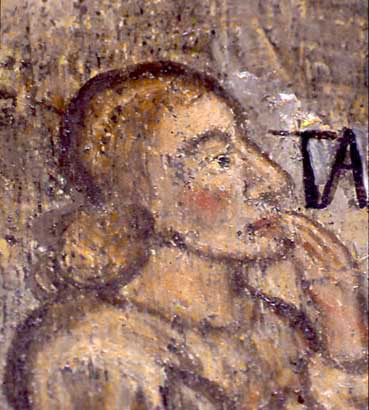"TACITURNITAS", taushet. Her synes den konkretiseringen som kunstneren bruker, å gi en tolking av dyden "TACITURNITAS" som går i retning av det som Jakob sier i sitt brev om å holde "tungen i tømme".
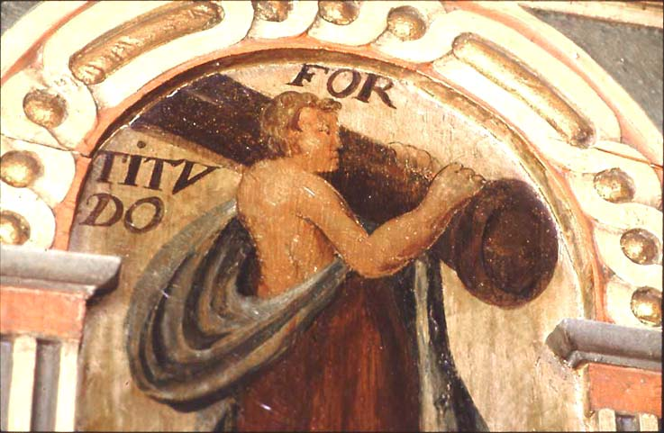"FORTITUDO", styrke, mot. Dette er den eneste av de 9 dydene som representeres ved en mann. De andre blir visualisert ved hjelp av en kvinne. Den språklige sammenhengen mellom "forte" i musikken og "FORTIUDO", og fort = festning, er for fjern og abstrakt til å gi samme gode mening som en åpenbart svært sterk mann, som bruker kreftene til noe nyttig og godt.
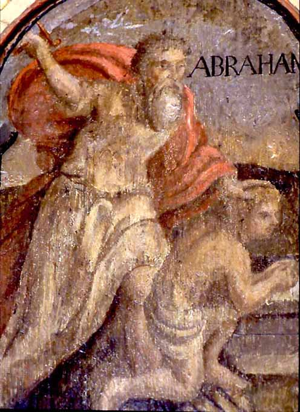Når et bilde skal gjengi en begivenhet som skildres i en tekst, vil bildet alltid måtte velge det øyeblikket i en samlet bevegelse som representerer det som etter malerens syn, er budskapet i teksten. "Og Abraham rakte hånden ut og tok kniven for å ofre sin sønn". 1. Mos. 22.10.
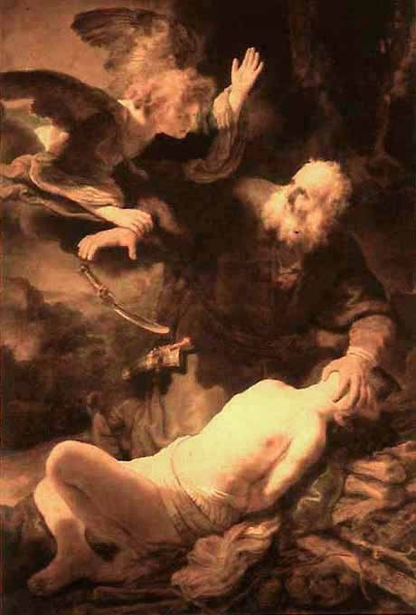Da Rembrandt, som også levde og virket på 1600 tallet, malte den samme situasjonen, valgte han tydeligvis en annen "overskrift" for sitt bilde: "Legg ikke hånd på gutten og gjør ham ikke noe!"
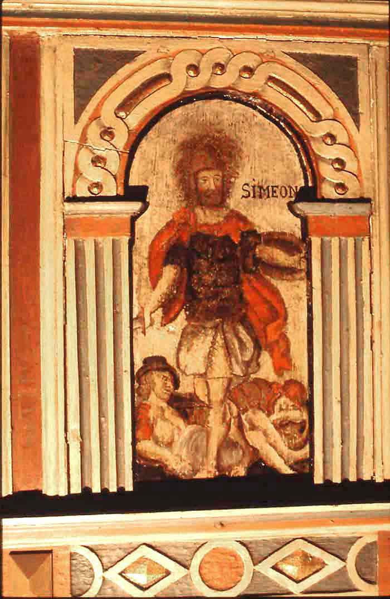Om Simeon og Levi fortelles det i 1. Mos at da "tok han sitt sverd, trengte seg inn i byen (Sikem), og slo alle mannfolk i hjel". Det er denne skjendselsdåden som får Jakob, deres far, til i sin avskjedsvelsignelse å si til sine sønner: "Forbannet være så mektig en harme!"
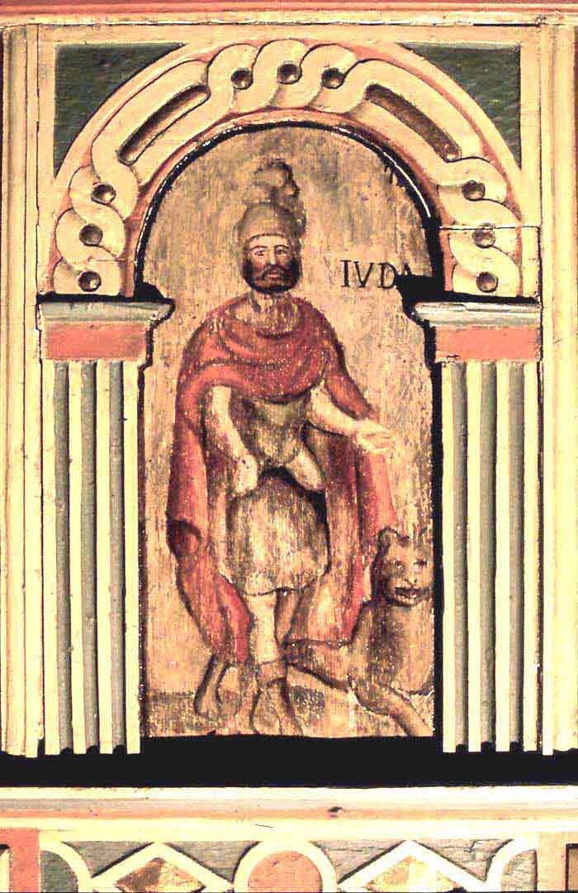Om Juda sier Jakob :"En løveunge er Juda!" "Han legger seg til ro og strekker seg som løven, som løvinnen - hvem våger å vekke ham?" Her har tydeligvis kunstneren malt Juda etter Jakobs karakteristikk.
Før vi ser på orgelgalleriet, skal vi ta for oss det som skjedde med prekestol og altertavle i året 1704.
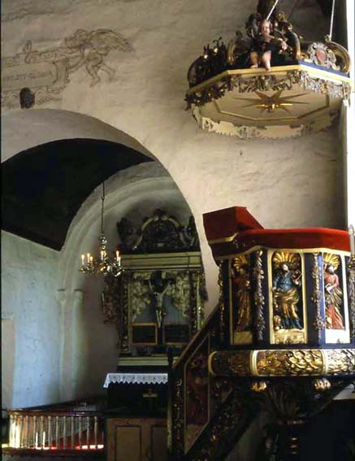Kjøpmann og skipsreder Christen Nielsen Wendelbo ble rådmenn i Kristiansand i 1685 og var borgermester i byen i 1690 - 92. Sammen med sin hustru Marie Mortensdatter avsluttet de en lang givertjeneste i 1704 ved å gi kirken den prekestolen og altertavlen som har stått i kirken siden.
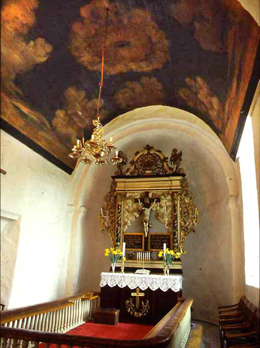Altertavlen er plassert foran den halvrunde avslutningen av koret. Det lille vinduet mot øst som skulle ta inn lyset fra morgensolen, dekkes av altertavlen. Lyset kommer nå inn fra et stort vindu på sørsiden av koret.
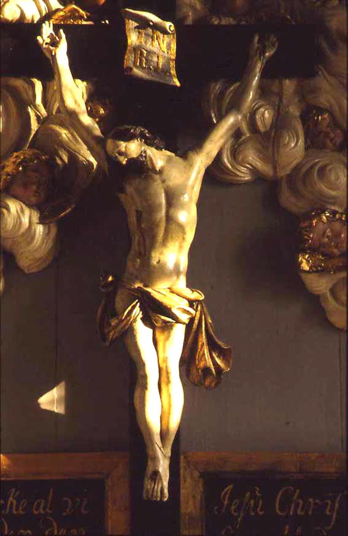"Pilatus hadde skrevet en innskrift og satt på korset". Innskriften var på hebraisk, latin og gresk. I.N.R.I. er en forkortelse av den latinske teksten: "Jesus Nazarenus Rex Judaorum", Jesus fra Nasaret Jødenes konge.
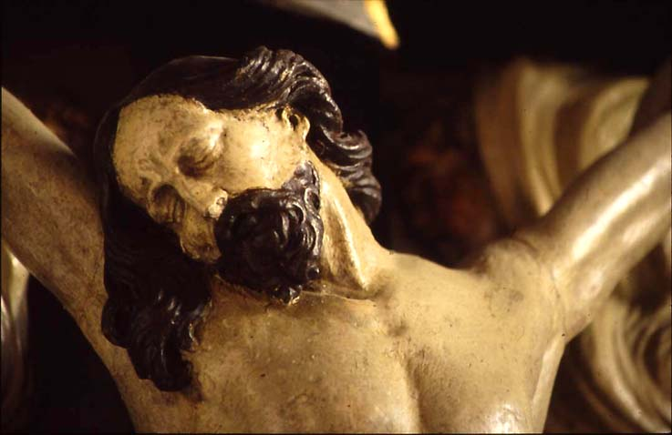"Det er fullbrakt!" - "Så bøyde han hodet og oppgav sin ånd". Disse ordene fra Johannesevangeliets beretning om Jesu død på korset, synes å ha vært utgangspunktet for det krusifikset vi finner i Oddernes kirke. Det er en Kristusfremstilling som både kan være forkynnelse, og som kan gi utgangspunkt for medfølelse og ettertanke.
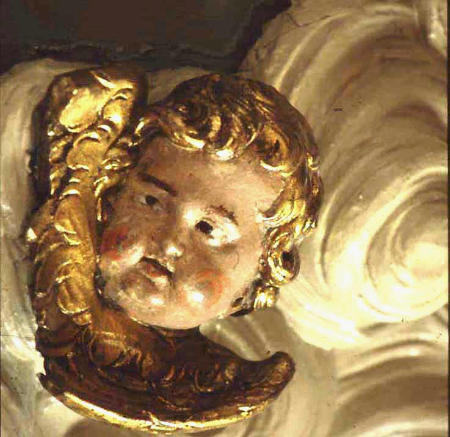Denne glade engelen, som er en av flere i skyene omkring Jesu kors, er med og forteller noe om Guds usynlige hjelp og trøst. Englene er plassert i skyene for å fortelle at de, på samme måte som skyene, befinner seg mellom himmel og jord, og at de av og til er synlige og av og til usynlige.
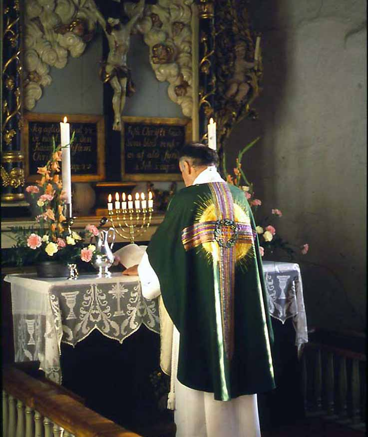I 1990, til 950 års jubileet, fikk kirken ny messehakel. Den er tegnet og sydd av høgskolelektor Solveig Robstad. Ved hjelp av stoff og garn, disse i og for seg så beskjedne materialtyper, har hun skapt en oppstandelsessol som synes å være selvlysende.
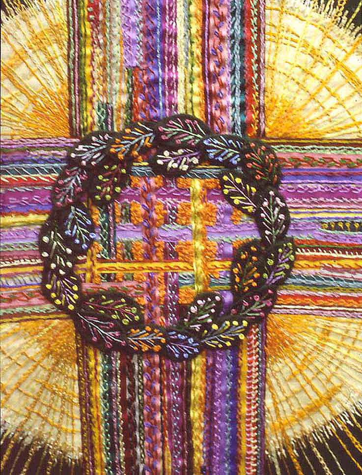Denne detaljen fra messehakelen er med og får fram noe av den symbolikken som ligger i den halvrunde koravslutningen, som nå er delvis skjult av altertavlen. Det er fra denne himmelhvelvingen den oppstandne Kristus kunne komme menigheten i møte på morgenrødens stråler.
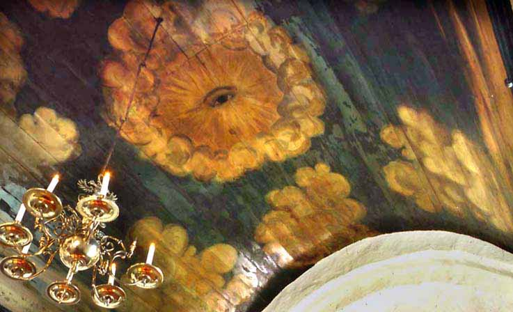 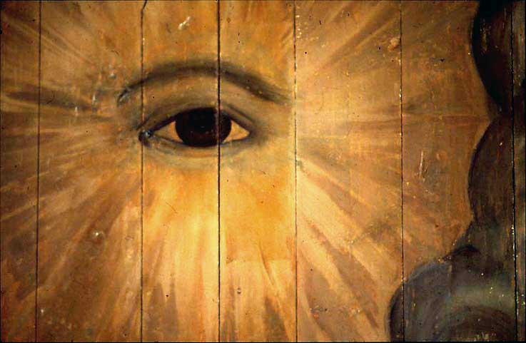Det store, milde Guds øye som er malt i det buete taket i koret, minner oss om at vi har en "yppersteprest" som "kan ha medynk med oss", som Hebreerbrevets forfatter uttrykker det. Gud er sammen med oss også i lidelsen.
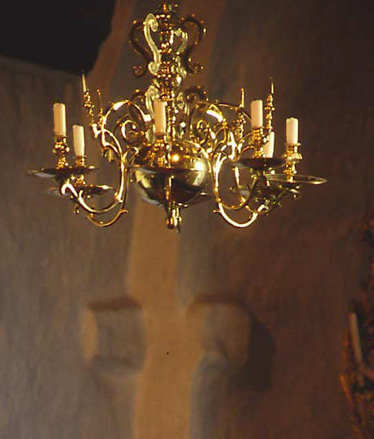Vederlagssteinen til hvelvingen bak altertavlen, er med og danner et kors av bygningselementer i det gamle middelalderkoret. Med en lysekrone over får vi her enda ett fullverdig påskebudskap.
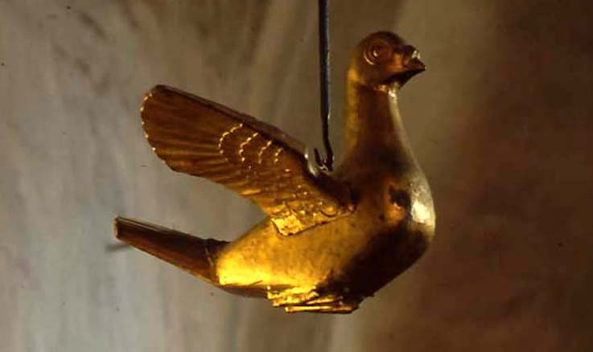En viktig oppgave for kirkekunstnere er å gi synlig, konkret uttrykk for en usynlig religiøs virkelighet. Et typisk eksempel på dette er duen, som er det synlige symbol for Den hellige ånd.
Duen over døpefonten kan minne foreldre og faddere om Jesu dåp: "Han så Guds Ånd komme ned over seg som en due", og hørte røsten fra himmelen som sa: "Dette er min sønn, den elskede, som jeg har behag i."
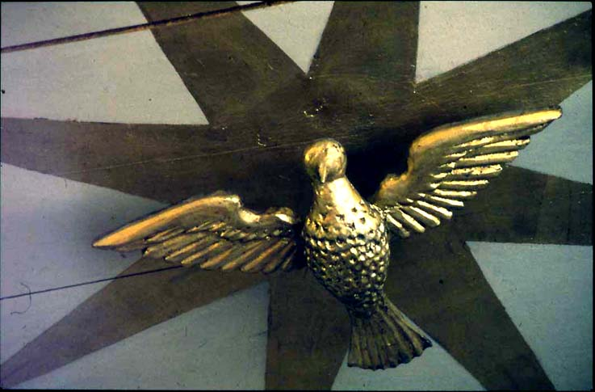Plasseringen av duen i baldakintaket over prekestolen, er vel et uttrykk for et ønske om åndsfylt preken. I Apostelgjerningene heter det: "Jeg vil utøse min ånd over alle mennesker. Sønner og døtre hos dere skal tale profetiske ord."
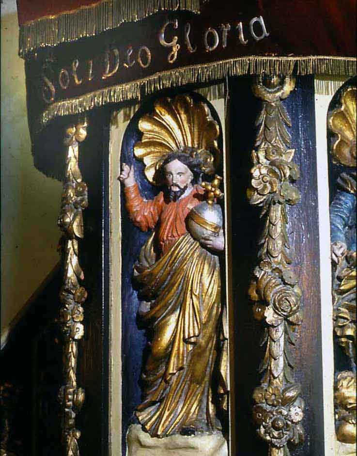Som frontfigur på prekestolen står "Salvator Mundi", verdens frelser. Han holder jordkloden med korset i sin venstre hånd, og har løftet sin høyre hånd til velsignelse. På begge sider og bak ham står de fire evangelister med sine symboler, oksen, løven, mennesket og ørnen.
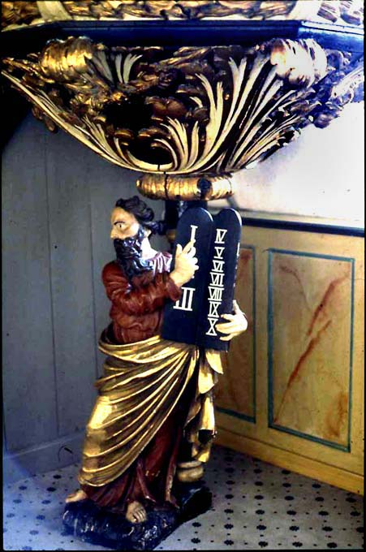Under prekestolen står Moses med lovens tavler. Denne plasseringen er nok et innlegg i debatten om forholdet mellom lov og evangelium. Loven danner grunnlaget for, men er underordnet evangeliet.
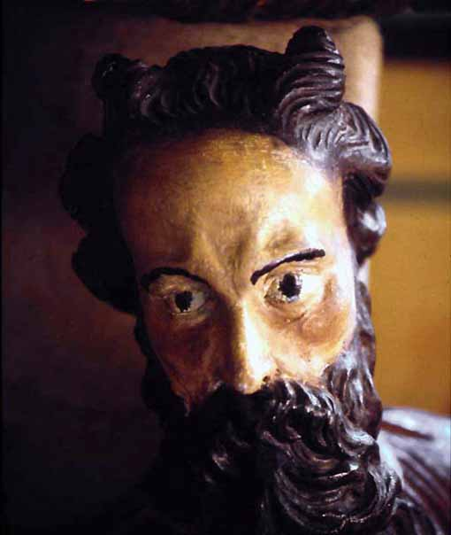Når en ser Moses rett forfra, legger en merke til at håret er formet på eiendommelig vis. Det ser granngivelig ut som Moses har horn. Dette er ikke noe som er enestående for Oddernes kirke.
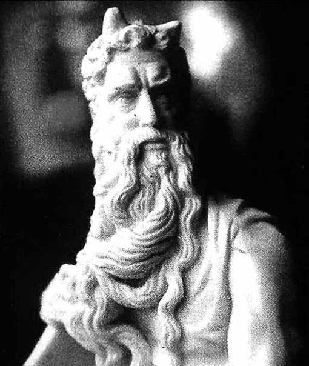På Michelangelos kjente Moses-statue har også Moses horn. Da Hieronimus på slutten av 300 tallet skulle oversette det gamle testamentet fra hebraisk til latin, leste han det hebraiske ordet "KRN" for "KÆRÆN", som betyr "å ha horn".
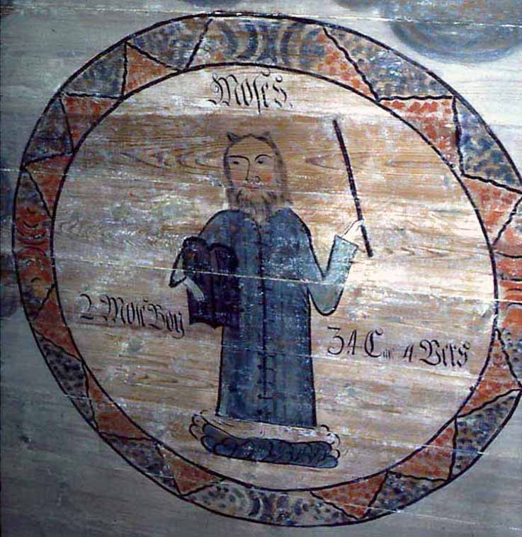Også i Grindheim kirke i Audnedal har hornene til Moses kommet med i Tore Asbjørnsen Risøynes Mosesframstilling fra 1791. Hornene skyldes en oversettelsesfeil. Ved å sette inn vokalen A i det hebraiske orrdet "KRN", får en "KARAN", som betyr strålende eller lysende.
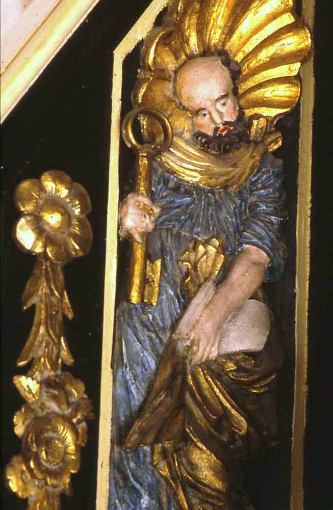På trappen opp til prekestolen finner vi Paulus og Peter. De lar seg lett identifisere ved at Paulus er utstyrt med "ordets sverd", og Peter har fått en svær nøkkel til himmelen.
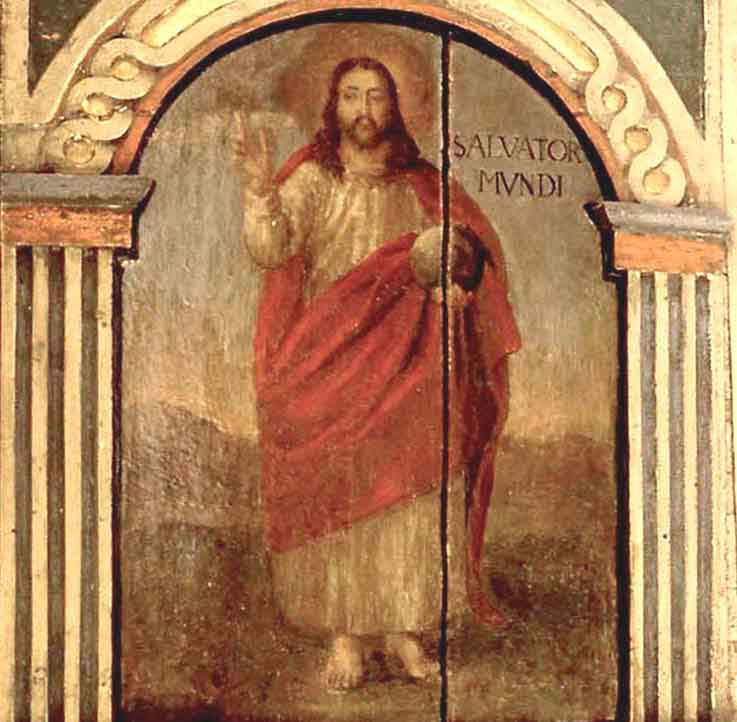På orgelgalleriet, som ble bygd etter 1704, finner vi igjen "Salvator Mundi" fra prekestolen. Hovedinngangen til kirken var den gang mellom prekestolen og orgelgalleriet, midt på langveggen. Det første og det siste som møtte den som gikk inn eller ut av kirken på denne tiden, var derfor "Salvator Mundi".
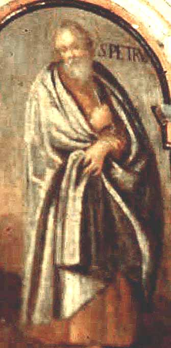 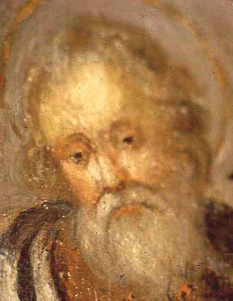Orgelgalleriets Simon Peter kommer, som på prekestolen, med himmerikets nøkler, og hele han holdning viser at han må være malt etter at prekestolen var på plass. Maleriet viser en langt større mulighet for personkarakterisering enn skulpturen på prekestolen.
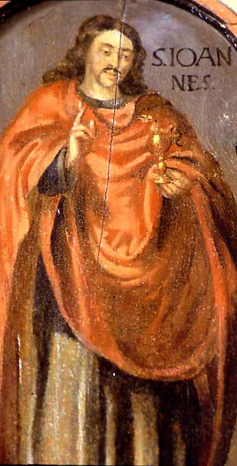 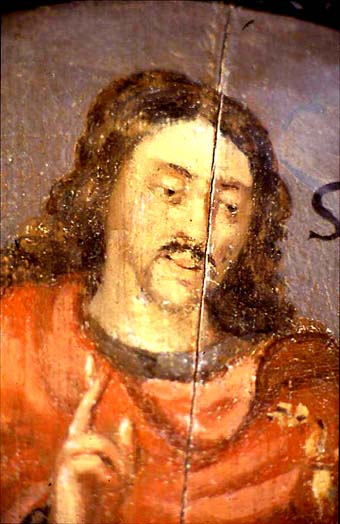Johannes var etter tradisjonen den eneste av apostlene som ikke led martyrdøden. Med sin høyre hånd løftet til velsignelse og med kalken i venstre hånd, levendegjør han noe av den mildhet som som ansiktet forteller om.
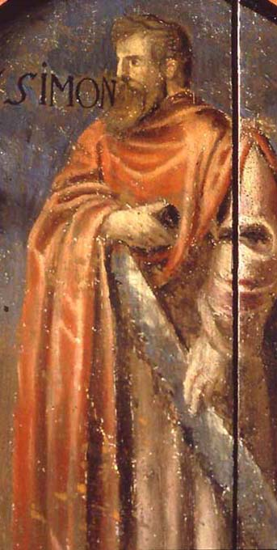 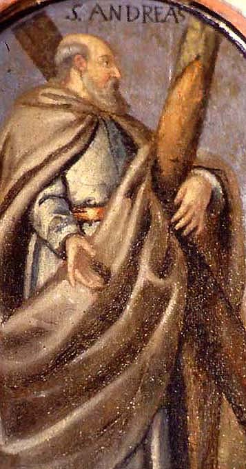De fleste av apostlene på orgelgalleriet er fremstilt på en måte som tydelig viser hvordan de led martyrdøden. Simor står og viser fram saga som ble brukt ved hans henrettelse. Andreas står her med "Andreaskorset", der han ble korsfestet "på skrå".
Etter tradisjonen ble Bartholomeus flådd levende. Han står her og viser fram flåkniven. Det er ikke lett å tolke det ansiktsuttrykket som kunstneren har utstyrt han med.
Når vi ser mot orgelgalleriet fra koret, ser vi den buete himlingen som ble satt opp i 1788. Orgelprospektet i bakgrunnen fra 1893 ble trolig ombygd under den store restaureringen i 1926 - 27.
Etter 1950-års jubileet har kirken fått nytt orgel, og et nytt orgelprospekt som stilmessig mer høre sammen med korets og altertavlens barokk enn med gallerienes renessansepreg.
Kilder:
Oddernes kirke 950 år. Kristiansand 1990
Knirk, James E., & Wolfram Perry: Runesteinen ved Oddernes kirke, opptrykk fra Universitets Oldsaksamling, Årbok 1990/92.
Hellemo, Geir: Guds bildebok. Virkelighetsforståelse i religiøse tekster og bilder. Oslo 1999